第6章 ボタンがなくちゃ始まらない
前の章では、ウィンドウを開いて図形や文字列を表示する方法を解説しました。次は、もっとアプリケーションらしいものを作ってみましょう。この章では以下の題材をとりあげます。
◇マウスクリックに応答する
◇なるべく簡単なプログラミングでマウスクリックに応答する
◇ウィンドウにメニューを付け、一人前のアプリケーションらしくする
これらの題材をプログラミングするために、BeOSのAPIが提供しているクラスのうち以下のものを利用します。
●BApplication(Application Kit)
●BWindow(Interface Kit)
●BView(Interface Kit)
●BMessage(Application Kit)
●BButton(Interface Kit)
●BMenuBar(Interface Kit)
●BMenu(Interface Kit)
●BMenuItem(Interface Kit)
これらのクラスの間の階層関係を、図6.1に示します。
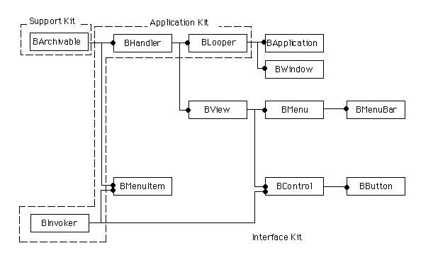
図[6.1] 第6章で主に扱うクラス間の階層図
プログラミングの説明に使うサンプルアプリケーションは、全部で四つ用意しています。最初の6.1節では、ウィンドウに表示された赤い四角をクリックすると、ウィンドウを閉じるアプリケーションを作ります。次に、6.2節では四角と円を表示し、どちらをクリックするかでウィンドウの動きが変わるようにします。その後、BeOSのAPIに用意されている部品でそれを置き換えたバージョンを作り、最後のサンプルでは、ウィンドウにメニューバーを付けて完成させます。アプリケーションが次第に完成していく手順を自分の目で見るために、できれば本書付属のCD-ROMに収録したものを実際に動かしながら読んでみて下さい。
6.1 マウスクリックに応答せよ
この章の狙いは、前の章と合わせてBeOSのアプリケーションプログラミングの基礎を一通り解説し、これより後の章に進む準備をしてもらうことです。この章でも、サンプルアプリケーションのソースコードを読めば、BeOSでのプログラミングがとても簡単なことが分かるでしょう。6.1.1 どこを押したらいいんだい
マウスクリックに応答するには、どんなプログラムを書けばいいんでしょうか。それを説明する前に、まずサンプルアプリケーションを見てみましょう。図6.2は、この章で最初に使うサンプルアプリケーション(ClickApp)を撮ったスクリーンショットです。
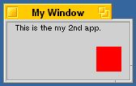
図[6.2] ClickAppのウィンドウ
どこかで見たような画面ですね。前の章で最後に使ったサンプルアプリケーション(SimpleClick)とほとんど同じです。違うのは、ウィンドウに表示されている文字列の内容が、“This is the my first app.”から“This is the my 2nd app.”になっていることくらいです。すぐ後で見るように、ソースファイルの構成や内容もほとんど変わりません。SimpleAppと同じように、BApplicationクラスとBWindowクラス、それとBViewクラスのそれぞれについてサブクラスを作成し、組み合わせているだけです。
ただし、このClickAppは、赤い四角の部分をマウスでクリックすると応答してくれるところがSimpleAppと違います。どのように応答するのかを確認するために、付録のCD-ROMからClickAppのソースファイルをコピーしてアプリケーションを作成し、実際に動かしてみて下さい。ClickAppのソースは、付録に付けたサンプルコード集の“6.1_ClickApp”という名前のフォルダに収録しています。アプリケーションの作り方を忘れてしまった人は、第4章で説明した手順を読み返して下さい。ClickAppの動きを確認したら、次はソースコードの説明に進みましょう。
[リスト6.1] ClickApp.hの内容
#ifndef _CLICK_APP_H_
#define _CLICK_APP_H_
#include <app/Application.h>
/*
* ClickAppクラスの定義
*/
class ClickApp : public BApplication {
// メソッド
public:
// 初期化と解放
ClickApp(void);
~ClickApp(void);
private:
// 起動と終了
void ReadyToRun(void);
};
#endif /* _CLICK_APP_H_ */
[リスト6.2] ClickApp.cpの内容
#include "ClickApp.h"
#include "ClickView.h"
#include "SingleWindow.h"
/*
* ClickAppクラスの非公開メソッド
*/
void
ClickApp::ReadyToRun (void)
{
SingleWindow* windowObj;
/* SingleWindowオブジェクトを生成 */
windowObj = new SingleWindow(
BRect(50, 50, 200, 120),
"My Window",
B_TITLED_WINDOW,
0
);
windowObj->InitContent(
new ClickView(
BRect(0, 0, 0, 0),
"content",
B_FOLLOW_ALL_SIDES,
B_WILL_DRAW
)
);
/* 画面に表示 */
windowObj->Show();
return;
}
/*
* 初期化と解放; ClickApp
*/
ClickApp::ClickApp (void)
: BApplication("application/x-vnd.FtGUN-ClickApp")
{ /* do nothing */ }
ClickApp::~ClickApp (void)
{ /* do nothing */ }
[リスト6.3] SingleWindow.hの内容
#ifndef _SINGLE_WINDOW_H_
#define _SINGLE_WINDOW_H_
#include <interface/Window.h>
/*
* SingleWindowクラスの定義
*/
class SingleWindow : public BWindow {
// メソッド
public:
// 初期化と解放
SingleWindow(BRect frame, const char* title,
window_type type, uint32 flags,
uint32 workspace = B_CURRENT_WORKSPACE);
virtual ~SingleWindow(void);
void InitContent(BView* inContent);
// 終了時処理
void Quit(void);
};
#endif /* _SINGLE_WINDOW_H_ */
[リスト6.4] SingleWindow.cpの内容
#include "SingleWindow.h"
#include <app/Application.h>
#include <support/Debug.h>
/* SingleWindowクラスの公開メソッド */
/*
* 初期化と解放; SingleWindow
*/
SingleWindow::SingleWindow (BRect frame, const char* title,
window_type type, uint32 flags, uint32 workspace)
: BWindow(frame, title, type, flags, workspace)
{ /* do nothing */ }
SingleWindow::~SingleWindow (void)
{ /* do nothing */ }
void
SingleWindow::InitContent (BView* inContent)
{
#if DEBUG
this->Lock();
ASSERT(this->IsHidden());
ASSERT(this->CountChildren() == 0);
this->Unlock();
#endif
BRect myBounds = this->Bounds();
/* ビューのサイズを調節 */
inContent->ResizeTo(myBounds.Width(), myBounds.Height());
/* ビューを貼り付ける */
this->AddChild(inContent);
return;
}
/*
* 終了時処理; SingleWindow
*/
void
SingleWindow::Quit (void)
{
/* アプリケーション本体に終了通知 */
be_app->PostMessage(B_QUIT_REQUESTED, be_app);
/* 親クラスのメソッドを実行 */
BWindow::Quit();
return;
}
リスト6.1～6.4は、ClickAppで使っているアプリケーションクラス(ClickApp)とウィンドウクラス(SingleWindow)のソースを示したものです。ビュークラスの方は、この後で説明します。また、ここではmain()ルーチンのソースを載せるのを省略しました。前の章で使ったサンプルと殆ど同じだからです。前の章を読みとばしてしまった人は、戻って説明を読んでみて下さい。
まず、リスト6.1と6.2はアプリケーションクラスのソースです。前の章で紹介したサンプルの“EmptyWindow”や“SimpleApp”と同じく、フック関数のReadyToRun()を再定義しています。ただし、リスト6.2に示した実装を見ると、その内容が若干異なっているのが分かります。前の章のサンプルでは、ウィンドウクラスのインスタンスを生成してShow()メソッドを呼び出すだけでした。それに対し、リスト6.2ではShow()メソッドを呼び出す前にInitContent()というメソッドを呼び出しています。そしてInitContent()メソッドの引数には、後で説明する“ClickView”という名前のビュークラスのインスタンスを生成して渡しています。このメソッドはSingleWindowクラスで独自に追加したもので、ビューオブジェクトの生成と、生成したビューオブジェクトをウィンドウに貼りつける処理を分離するためのものです。
リスト6.3と6.4が、SingleWindowクラスのソースです。リスト6.4の中で、コンストラクタとデストラクタ、それからQuit()メソッドの内容は、前の章で紹介したSimpleAppと同じです。新しく追加したInitContent()メソッドでは、受け取ったビューオブジェクトに対してResizeTo()メソッドを呼び出し、自分の枠いっぱいまで拡げます。それからAddChild()メソッドを使って自分に貼りつけています。
次に、ClickAppアプリケーションで最も注目すべきClickViewクラスを説明しましょう。リスト6.5と6.6が、ClickViewクラスのソースです。
[リスト6.5] ClickView.hの内容
#ifndef _CLICK_VIEW_H_
#define _CLICK_VIEW_H_
#include <interface/View.h>
/*
* ClickViewクラスの定義
*/
class ClickView : public BView {
// メソッド
public:
// 初期化と解放
ClickView(
BRect frame, const char* name, uint32 resizeMask, uint32 flags);
~ClickView(void);
private:
// 描画処理
void Draw(BRect updateRect);
// マウス応答
void MouseDown(BPoint where);
void HotSpotAction(bool currInside, bool prevInside);
};
#endif /* _CLICK_VIEW_H_ */
[リスト6.6] ClickView.cpの内容
#include "ClickView.h"
#include <app/Application.h>
#include <interface/Window.h>
/* 定数定義 */
const BRect kHotSpot(110, 30, 140, 60);
/* ClickViewクラスの非公開メソッド */
/*
* 描画処理; ClickView
*/
void
ClickView::Draw (BRect /* updateRect */)
{
/* 文字列と図形を描画 */
this->DrawString("This is the my 2nd app.", BPoint(10, 10));
this->SetHighColor(255, 0, 0);
this->FillRect(kHotSpot);
return;
}
/*
* マウス応答; ClickView
*/
void
ClickView::MouseDown (BPoint where)
{
uint32 buttons = 0;
int32 theInt;
bool currInside = true;
bool prevInside = false;
/* 現在押されているマウスボタンをチェック */
this->Window()->CurrentMessage()->FindInt32("buttons", &theInt);
buttons = theInt;
if (buttons != B_PRIMARY_MOUSE_BUTTON)
return; /* 第一ボタン以外の場合は何もしない */
/* クリック応答領域かどうかをチェック */
if (! kHotSpot.Contains(where))
return; /* 他の場所 */
this->HotSpotAction(currInside, prevInside);
/* マウスアップまで追跡 */
while (buttons & B_PRIMARY_MOUSE_BUTTON) {
::snooze(20 * 1000);
this->GetMouse(&where, &buttons, true);
/* マウス位置に応じた処理 */
prevInside = currInside;
currInside = kHotSpot.Contains(where);
this->HotSpotAction(currInside, prevInside);
}
/* 必要ならアクションを実行 */
if (kHotSpot.Contains(where))
be_app->PostMessage(B_QUIT_REQUESTED, be_app);
return;
}
void
ClickView::HotSpotAction (bool currInside, bool prevInside)
{
rgb_color orgColor;
/* 変更がなければ何もしない */
if (currInside == prevInside)
return;
/* マウス位置に応じて色を変える */
orgColor = this->HighColor(); /* ビューの描画色を保存 */
if (currInside)
this->SetHighColor(0, 255, 0);
else
this->SetHighColor(255, 0, 0);
this->FillRect(kHotSpot);
this->SetHighColor(orgColor); /* 描画色を元に戻す */
return;
}
/*
* ClickViewクラスの公開メソッド
*/
ClickView::ClickView (BRect frame, const char* name,
uint32 resizeMask, uint32 flags)
: BView(frame, name, resizeMask, flags)
{
this->SetViewColor(0xD0, 0xD0, 0xD0);
}
ClickView::~ClickView (void)
{ /* do nothing */ }
ClickViewクラスでは、BViewクラスのフック関数のうち二つを再定義しています。描画処理を行うDraw()と、マウスクリックに応答するためのMouseDown()です。また、MouseDown()の中で利用する補助手続きとして、HotSpotAction()というメソッドを独自に追加しました。
このメソッドは、ウィンドウに表示された赤い四角の中でマウスボタンを押した時に、四角の色を赤から緑に変える処理を行います。これら三つのメソッドの内容を、以下に述べます。なお、コンストラクタとデストラクタについては、前章の最後に紹介したサンプル(SimpleApp)の場合(SimpleViewクラスの改訂版;リスト5.14)と同じなので省略します。
■Draw()
文字列と赤い四角を描画します。前章のリスト5.14とほとんど同じですが、FillRect()メソッドに渡す引数に“kHotSpot”という定数を指定しているのが違います。これは、MouseDown()メソッドやHotSpotAction()メソッドの中で、同じ矩型領域に対する処理を行う必要があるためです。
■MouseDown()
このメソッドは、ビューオブジェクトの上でマウスボタンが押された時に、BViewクラスの働きによって呼び出されるフック関数です。リスト6.6では、まず押されたのが第一マウスボタン(注6-2)であるかどうかを調べ、次に押された位置が赤い四角の上かどうかを調べています。これら二つの条件を満足している場合にだけ応答動作を行い、そうでない場合は何もしないで終わります。
どのマウスボタンが押されたのかを調べるために、BWindowクラスとBMessageクラスを利用していることに注意して下さい。まずWindow()メソッドを呼び出して自分が所属するウィンドウオブジェクトのポインタを取得し、取得したウィンドウオブジェクトに対してCurrentMessage()を呼び出しています。このメソッドは、ウィンドウオブジェクトが現在処理しているメッセージを返すものです。この場合は、MouseDown()メソッドが呼び出されるもとになったマウスダウン・メッセージが返されます。そして、返されたメッセージ、つまりBMessageクラスのインスタンスからマウスボタン情報を取得します。マウスダウンを通知するメッセージには、どのマウスボタンが押されたのかを示すフラグが“buttons”という名前で格納されており、BMessageクラスのFindInt32()メソッドを使って取り出すことができるのです。これらユーザ入力イベントとメッセージの関係については、次の6.1.2と6.1.3で詳しく説明します。
マウスボタンが押された場所が赤い四角の上かどうかを確認するのには、BRectクラスのContains()メソッドを利用しています。MouseDown()メソッドの引数には、マウスボタンが押された位置を示す点(BPoint)が渡されます。この点が四角の中に含まれるのかどうかを、Contains()メソッドを使って四角自身、つまりBRectオブジェクトに問い合わせているのです。
押されているマウスボタンと押された位置の確認が終わったら、マウスクリックに対する応答動作を開始します。リスト6.6では、まずHotSpotAction()メソッドを呼び出して四角の色を赤から緑に変え、それからマウスボタンが離されるまでマウスの動きを追跡しています。マウスを追跡するには、BViewクラスのGetMouse()メソッドを利用します。このメソッドは、マウスカーソルの現在位置と、押されているマウスボタンを調べて返します。マウスカーソルの位置に応じてHotSpotAction()メソッドに渡す引数を変えて呼び出し、カーソルが四角の外に出ると、四角の色を緑から赤へ戻すようにしています。また、マウスの第一ボタンが押されているかどうかをwhile文の条件式で調べ、第一ボタンが離されたら追跡処理が終わるようにループを組んでいます(注6-3)。
マウスの第一ボタンが離されたことを検出して追跡用のループ処理を追えたら、最後にアクション動作を行うべきかどうかを調べ、その必要があると分かったら実行します。つまり、変数currInsideの値がtrueであり、マウスボタンが離されたのが四角の中だということが分かった時は、アプリケーションに終了要求メッセージ(B_QUIT_REQUESTED)を送って終了させます。
■HotSpotAction()
マウスカーソルが、赤い四角、すなわちマウスクリックに対して応答する「ホットスポット」上にあるかどうかによって、ホットスポットの表示色を変えます。つまり、カーソルがホットスポット上にあれば緑、外に出ている時には赤で表示します。処理効率を多少上げるために、カーソルとホットスポットとの位置関係が前回と変化していない場合は、何もしないですぐ戻るようにしています。
なお、ホットスポットの描画を行う前に、HighColor()メソッドを使って元々の描画色を取得し、変数orgColorに代入して保存していることに注意して下さい。保存した描画色は、ホットスポットを描画し終わった後にSetHighColor()メソッドを使って設定を戻すのに利用します。これを怠ると、ホットスポット以外の部分の表示色がホットスポットと同じになってしまう場合があるからです。Draw()メソッドの中で描画処理を行うときはこのような心配をする必要がありませんが、それは、ウィンドウオブジェクトの働きによって各ビューオブジェクトの再描画が行われる際、Draw()メソッドの呼び出し前後で描画色設定の保存と復元が行われるからなのです。つまり、Draw()メソッドを呼び出す前に描画パラメータが保存され、呼び出しが終わったら保存しておいたパラメータが復元されるため、Draw()メソッドの中ではそれらを意識する必要がないのです。
前章の5.2.2で再描画処理の流れを説明しましたが(図5.13)、再描画通知を受け取ったウィンドウオブジェクトは、下図のような手順でビューオブジェクトに再描画を行わせます。
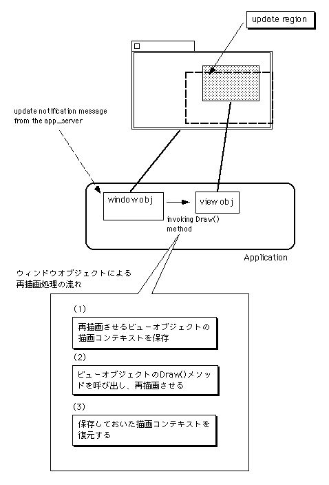
図[6.3] ウィンドウオブジェクトによるビューオブジェクトの再描画処理手順
ここまでで、本章の冒頭に掲げた題材の最初の一つをクリアしました。ユーザのマウスクリック操作に応答するには、BViewクラスのサブクラスを作ってMouseDown()メソッドを再定義すればよいのです。残りの二つの題材を扱ったサンプルの説明に進む前に、マウスクリックなどのユーザ入力イベントが処理される仕組について解説します。上に述べたClickViewクラスの説明で、特にMouseDown()メソッドの内容について分からないところがある人は、次の6.1.2と6.1.3を読んでみて下さい。もちろん、BeOSのメッセージ機構については既に理解してしまった人は、次の二つの説明をとばして6.2節に進んでもらって構いません。
- (注)6-1
- リスト6.4のSimgleWidow::InitContent()メソッドでは、#if DEBUG文と#endif文が冗長だと思われるかも知れません。ASSERT()マクロはDEBUGが0であれば無効なのに、それを#if DEBUGと#endif文で囲っているからです。しかし、これはASSERT()マクロそのものに対するのではなく、ASSERT()によるチェックで呼び出しているBWindowクラスのIsHidden()メソッドのために設けたものです。IsHidden()メソッドは、それを呼び出す前にBWindowオブジェクトをロックしておく必要があります。リスト6.4では、ASSERT()が有効であってIsHidden()メソッドが呼び出される場合にのみウィンドウがロックされるよう、Lock()とUnlock()の呼び出しを#if DEBUGと#endif文で囲っているのです。
- (注)6-2
- Macintoshですとマウスボタンは一つしかないのが普通ですが、PCの世界ではマウスボタンは複数あるのが普通です。BeOSでは、三つまでのマウスボタンに対応しています。
- (注)6-3
- リスト6.6のClickView::MouseDown()メソッドでは、マウスの追跡処理を行うwhileループの中で定期的にsnooze()を呼び出しています。これは、自発的にCPUを他のスレッドへ明け渡し、他のスレッドとの間の実行がスムーズに切り替わるようにするためです。もちろん、BeOSではプリエンプティブなスケジューリングが行われるので、このようにすることは必ずしも必要ではありません。しかし、それぞれのスレッドが不必要にCPUを占有しないようにすれば、システム全体の動作がよりスムーズになります。
6.1.2 イベントとメッセージ
第3章で、ユーザの入力操作などによって生じたイベントは、BeOSではすべてメッセージとして関連するオブジェクトに届けられると述べました。その際に説明した通り、このメッセージ伝達は、BeOSのマイクロカーネルが提供するスレッド間通信機構を使って行われます。つまり、Application Serverのスレッドからアプリケーションのスレッドにイベント通知メッセージが送られ、その後で最終的な宛先のオブジェクトにメッセージが配送されるのです。特に、あるビューの上でマウスボタンを押した場合など、ビューオブジェクトに関連するイベントが起きたときは、まずそのビューが所属するウィンドウ、すなわちビューが貼りついているウィンドウオブジェクトにメッセージが送られます。そして、ウィンドウオブジェクトの働きによって最終宛先のビューオブジェクトにメッセージが配送されるのです。何度も述べているように、ウィンドウオブジェクトは専用のスレッドを用いて動作しており、そのスレッドに対してApplication Serverからメッセージが送られます。送られたメッセージを受け取ったウィンドウのスレッドは、ひとまずメッセージをメッセージ・キューに格納します。それと並行して、メッセージ・キューから一つずつメッセージを取り出し、順番に処理するのです。つまり、メッセージの宛先として指定されたビューオブジェクトを探し、メッセージの内容に応じたメソッドの呼び出しを行います。
このメッセージ処理の仕組は、BWindowクラスが継承しているBLooperクラス、およびBViewクラスやBLooperクラス自身が継承しているBHandlerクラスの働きによって行われるということは、第3章で既に述べました。念のためにおさらいしておくと、専用のスレッドを用いて動作し、スレッド間でのメッセージ通信用にポートとメッセージキューを備えているのがBLooperクラスです。そして、BLooperオブジェクトを経由して他のスレッドから渡されたメッセージに応答し、必要な処理を行うのがBHandlerクラスです。
ユーザの入力操作によって発生したイベントが、どのようにしてApplication Serverから関連するビューオブジェクトに届けられるのかを示すために、その流れを図にしてみました。
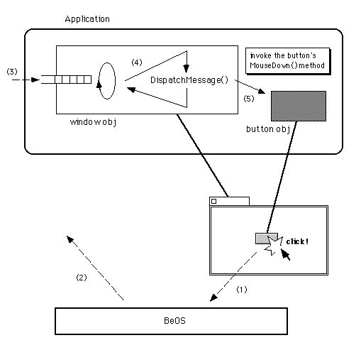
図[6.4] マウスボタンの押下～MouseDown()呼び出しまでの流れ
図6.4は、マウスボタンが押されてから、関連するビューオブジェクトのMouseDown()メソッドが呼び出されるまでの様子を描いたものです。マウスボタンが押されたことを検出したApplication Serverは、そのことをビューオブジェクトに知らせるメッセージを作って、アプリケーションのウィンドウスレッドに送ります。送られたメッセージはウィンドウオブジェクトのメッセージキューに格納され、ウィンドウスレッドによって順に処理されます。ウィンドウスレッドは、メッセージキューから取り出したメッセージの内容を調べ、マウスボタンが押されたことを知らせるものであった場合には、メッセージの宛先として指定されたビューオブジェクトを探し、MouseDown()メソッドを呼び出してそのことを伝えるのです。
メッセージキューから取り出したメッセージの処理は、BLooperクラスがフック関数として提供しているDispatchMessage()メソッドで行われます(注6-4)。BWindowクラスでは、このメソッドを再定義してマウスダウン・メッセージに対する独自処理を実装しています。さて、DispatchMessage()はBLooperクラスの働きによって呼び出されるものですが、その呼び出しの間、処理対象となったメッセージのポインタがオブジェクトの内部に保管されます。リスト6.6で使ったCurrentMessage()は、このポインタを返してくれるメソッドなのです。つまり、MouseDown()メソッドを呼び出されたビューオブジェクトがメッセージの内容を知りたい時は、自分が所属するウィンドウオブジェクトに対してCurrentMessage()を呼び出せばよいのです。
ここまでの説明で、ユーザの入力操作によって生じたイベントが、どのようにしてビューオブジェクトに伝えられるのかということが分かったでしょうか?次は、イベントの内容がどのようにメッセージに記録されるのかを説明します。また、メッセージに記録されたイベントの内容を読み出すやり方についても説明します。これが分かれば、リスト6.6で第一マウスボタンが押されているかどうかを調べるのに使った手順を理解できるでしょう。
- (注)6-4
- ただし、全てのメッセージがDispatchMessage()メソッドに渡されるわけではありません。ビューの再描画通知など、高速処理する必要があるものについてはDispatchMessage()メソッドを経由させず、メッセージキューから取り出すとすぐに処理されます。
6.1.3 メッセージプロトコル
まず、メッセージの構造を説明します。図6.5は、メッセージの構造を示したモデル図です。
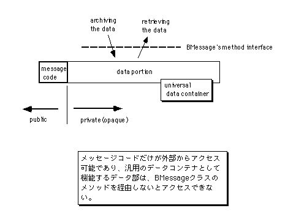
図[6.5] メッセージのモデル図
図のように、メッセージはそれが何を伝えるものかを示すメッセージコードと、引数として付随するデータから構成されます。どんなデータが付随するかはメッセージによって変わりますし、付随するデータが存在しないメッセージもあり得ます。たとえば、これまで見てきたサンプルの中には、アプリケーションオブジェクトに終了要求メッセージ(B_QUIT_REQUESTED)を送るものがありましたが、このメッセージは付随データを持ちません。
なお、BeOSのAPIではBMessageというクラスが提供されており、メッセージはBMessageクラスのインスタンスによって表現されます。つまり、BMessageオブジェクトをやり取りすることによってメッセージ通信を行います。リスト6.6や、またリスト6.4では、アプリケーションオブジェクトに対してPostMessage()メソッドを呼び出し、終了要求メッセージを送っていますが、ソースコード上にはBMessageオブジェクトが登場しません。しかし、PostMessage()メソッドの中ではBMessageオブジェクトが自動的に生成され、アプリケーションオブジェクトのメッセージキューに格納されるのです。
さて、BMessageクラスはメッセージコードを公開データメンバとして持つ一方、付随データを格納する部分を非公開のデータメンバにしています。つまり、図6.5でいえば、先頭のメッセージコードだけを直接アクセスできるようにし、後の部分を隠しているのです。付随データにアクセスするには、BMessageオブジェクトに対してメソッド呼び出しを行わないといけません。このことは一見面倒に思える反面、付随データの格納形式をメッセージ自身が知っているため、メッセージを取り扱う側ではその詳細を気にする必要がないという利点があります。
メッセージの付随データは、最初に述べたように可変長であり、メッセージの引数として様々なデータ項目を相手に渡せます。付随データの内容、すなわちBMessageオブジェクトに格納されたデータ項目は、名前と型を使って管理され、格納できるデータ項目の個数に制限はありません。
BMessageオブジェクトに任意のデータ項目を格納できるといっても、メッセージを送る側の都合で格納するデータ項目を好きに決めてしまうわけにはいきません。メッセージを送る側と受け取る側の双方で、メッセージの内容について了解をとっておく必要があります。たとえば、マウスボタンが押されたことを知らせるマウスダウン・メッセージには、リスト6.6で見たように、どのボタンが押されたのかを示すフラグを格納する決まりになっています。
このような、メッセージのやり取りに関する取り決め、すなわちメッセージプロトコルは、Be社によって規定されたものがAPIリファレンスに記載されています。メッセージプロトコルの例として、マウスダウン・メッセージ(B_MOUSE_DOWN)に格納するデータ項目の内容を表6.1に示します(注6-5)。マウスダウン・メッセージ以外のメッセージに関するプロトコルや、またデータ項目の詳細については、BeOSのAPIリファレンスを参照して下さい。
+--------------+------------+-------------------------------------------+
| データ項目名 | データの型 | 意味 |
+==============+============+===========================================+
| when | int64 | マウスボタンが押された時刻。 |
+--------------+------------+-------------------------------------------+
| where | BPoint | マウスボタンが押されたカーソル位置。 |
+--------------+------------+-------------------------------------------+
| modifiers | uint32 | マウスボタンと一緒に押されていた |
| | | モディファイア・キーを示すフラグ。 |
+--------------+------------+-------------------------------------------+
| buttons | uint32 | どのマウスボタンが押されたかを示すフラグ。|
+--------------+------------+-------------------------------------------+
| clicks | int32 | マウスボタンが続けて押された回数。 |
+--------------+------------+-------------------------------------------+
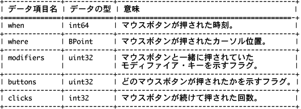
BMessageオブジェクトに格納されたデータ項目を読み出したり、またデータ項目を書き込んで追加するには、BMessageオブジェクトに対してメソッド呼び出しを行う必要があることは既に述べた通りです。データ項目にアクセスするためのメソッドは、システムで定義されているデータの型ごとに備わっています。表6.2に、これらのメソッドの一覧を示します。
+---------------+--------------------------+------------------------------+
| データ型 | データ項目の追加メソッド | データ項目の読み出しメソッド |
+===============+==========================+==============================+
| bool | AddBool() | FindBool() |
+---------------+--------------------------+------------------------------+
| int8, uint8 | AddInt8() | FindInt8() |
+---------------+--------------------------+------------------------------+
| int16, uint16 | AddInt16() | FindInt16() |
+---------------+--------------------------+------------------------------+
| int32, uint32 | AddInt32() | FindInt32() |
+---------------+--------------------------+------------------------------+
| float | AddFloat() | FindFloat() |
+---------------+--------------------------+------------------------------+
| double | AddDouble() | FindDouble() |
+---------------+--------------------------+------------------------------+
| char* | AddString() | FindString() |
+---------------+--------------------------+------------------------------+
| void* | AddPointer() | FindPointer() |
+---------------+--------------------------+------------------------------+
| BPoint | AddPoint() | FindPoint() |
+---------------+--------------------------+------------------------------+
| BRect | AddRect() | FindRect() |
+---------------+--------------------------+------------------------------+
| entry_ref | AddRef() | FindRef() |
+---------------+--------------------------+------------------------------+
| BMessage | AddMessage() | FindMessage() |
+---------------+--------------------------+------------------------------+
| BMessenger | AddMessenger() | FindMessenger() |
+---------------+--------------------------+------------------------------+
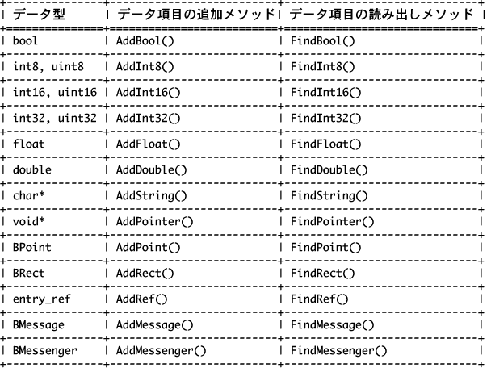
表6.2に示したメソッドに加え、アプリケーション側で任意のデータ型を追加して扱えるように、AddData()/FindData()というメソッドが用意されています。なお、これらのメソッドの詳細についてはAPIリファレンスを参照して下さい。
長い説明が続きましたが、もう少しでこの節も終わりです。一息ついたら次のサンプルに進み、もうちょっとアプリケーションらしいものを作ってみましょう。その前に、リスト6.6のまとめをやっておきます。表6.1を見ると分かるように、どのマウスボタンが押されたのかを示すフラグは、“buttons”という名前を持つuint32型のデータ項目としてメッセージに格納されます。したがって、このフラグを読み出すには、BMessageオブジェクトに対してFindInt32()メソッドを呼び出し、データ項目の名前を指定する引数に文字列"buttons"を指定すればよいというわけです。確認のために、リスト6.6を読み返してみて下さい。以上で、この節は終わりです。
- (注)6-5
- メッセージプロトコルで規定するのは、付随データの内容だけではありません。メッセージに対する返答を必要とするかどうかや、その形式など、メッセージ通信の手順全般を定めるのがプロトコルです。
6.2 標準部品を便利に使おう
前の節で説明に使ったサンプル(ClickApp)は、ウィンドウに表示された赤い四角をクリックするとアプリケーションを終了するだけでした。これではあまり面白くありません。次は、それ以外のアクション動作をやらせてみましょう。6.2.1 ボタンの数を増やしたら
この節では、“ButtonApp”というサンプルアプリケーションを使って説明します。ButtonAppには二つのバージョンがあり、5.2節で説明に使った“SimpleApp”のときと同様、後のバージョンの方が最初のものよりもシンプルな実装になっています。まずは、最初のバージョンを見てみましょう。
図[6.6] ButtonApp/withCustomViewのウィンドウ
ButtonAppの最初のバージョンを起動すると、図6.6のウィンドウが開かれます。ButtonAppのソースファイルやプロジェクトファイルは、付録に付けたサンプルコード集の“6.2_ButtonApp”というフォルダに入っています。このフォルダの中にはさらに三つのフォルダがありますが、“withCustomView”というのが、これから説明する最初のバージョンを収めたフォルダです。ただし、二番目のバージョンと共通のソースファイルは“Common”というフォルダの方に入れています。ですから、サンプルコード集からソースをコピーして使う時は“6.2_ButtonApp”フォルダごと一度にコピーして下さい。そうすれば、“withCustomView”フォルダと“Common”フォルダが一緒にコピーされます。“Common”フォルダを一緒にコピーしないと、ソースファイルが足りないのでアプリケーションを作れなくなってしまいます。
これからButtonAppのソースコードの内容を説明しますが、できれば説明を読む前に、アプリケーションを作って動かしてみて下さい。まずアプリケーションの動きを見ておく方が、ソースコードを理解するのが簡単になります。
アプリケーションを動かしてみましたか?念のためにButtonAppの動きを説明しておきましょう。もう一度図6.6を見て下さい。ウィンドウの中には、赤い四角と円が表示されています。四角の方をクリックすると、アプリケーションが終了します。これは前の節のClickAppと同じです。四角ではなく、円の方をクリックしてもウィンドウが閉じてしまいます。しかし、アプリケーションが終了するわけではありません。画面右上隅のDeskBarに並んだメニューには、ButtonAppの項目が残っているはずです。円がクリックされた時はウィンドウを最小化(注6-6)して隠すだけなので、DeskBarのウィンドウメニューを使えばまた開くことができます。
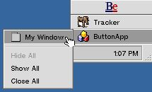
図[6.7] DeskBarのウィンドウメニューを選択した様子
ButtonAppの動きが分かったでしょうか?動きが分かったら、ソースコードの説明に進みましょう。リスト6.7～6.10に、ButtonAppのソースを示します。
[リスト6.7] ButtonView.hの内容
#ifndef _BUTTON_VIEW_H_
#define _BUTTON_VIEW_H_
#include <interface/View.h>
/*
* ButtonViewクラスの定義
*/
class ButtonView : public BView {
// メソッド
public:
// 初期化と解放
ButtonView(
BRect frame, const char* name, uint32 resizeMask, uint32 flags);
~ButtonView(void);
private:
// 描画処理
void Draw(BRect updateRect);
// マウス応答
void MouseDown(BPoint where);
void HotSpotAction(
bool currInside, bool prevInside, int32 hotSpot);
int32 FindHotSpot(BPoint where);
void HotSpotResult(int32 hotSpot);
};
#endif /* _BUTTON_VIEW_H_ */
[リスト6.8] ButtonView.cpの内容
#include "ButtonView.h"
#include "KGCircle.h"
#include <interface/Window.h>
/* 定数定義 */
const int32 kRectArea = 1;
const int32 kCircleArea = 2;
/* ボタン処理用のオブジェクト */
const BRect kHotSpotRect(110, 30, 140, 60);
const KGCircle kHotSpotCircle(BPoint(30, 45), 15);
/* ButtonViewクラスの非公開メソッド */
/*
* 描画処理; ButtonView
*/
void
ButtonView::Draw (BRect /* updateRect */)
{
/* ボタンなどを描画 */
this->DrawString("This is the my 3rd app.", BPoint(10, 10));
this->SetHighColor(255, 0, 0);
this->FillRect(kHotSpotRect);
kHotSpotCircle.DrawOn(this);
return;
}
/*
* マウス応答; ButtonView
*/
void
ButtonView::MouseDown (BPoint where)
{
uint32 buttons = 0;
int32 theInt, theHotSpot;
bool currInside = true;
bool prevInside = false;
/* 現在押されているマウスボタンをチェック */
this->Window()->CurrentMessage()->FindInt32("buttons", &theInt);
buttons = theInt;
if (buttons != B_PRIMARY_MOUSE_BUTTON)
return; /* 第一ボタン以外の場合は何もしない */
/* クリック応答領域かどうかをチェック */
theHotSpot = this->FindHotSpot(where);
if (theHotSpot < 0)
return; /* 他の場所 */
this->HotSpotAction(currInside, prevInside, theHotSpot);
/* マウスアップまで追跡 */
while (buttons & B_PRIMARY_MOUSE_BUTTON) {
::snooze(20 * 1000);
this->GetMouse(&where, &buttons, true);
/* マウス位置に応じた処理 */
prevInside = currInside;
currInside = (this->FindHotSpot(where) == theHotSpot);
this->HotSpotAction(currInside, prevInside, theHotSpot);
}
/* 必要ならアクションを実行 */
if (currInside)
this->HotSpotResult(theHotSpot);
return;
}
void
ButtonView::HotSpotAction (
bool currInside, bool prevInside, int32 hotSpot)
{
rgb_color orgColor;
/* 変更がなければ何もしない */
if (currInside == prevInside)
return;
/* マウス位置に応じて色を変える */
orgColor = this->HighColor(); /* 前景色を保存 */
if (currInside)
this->SetHighColor(0, 255, 0);
else
this->SetHighColor(255, 0, 0);
switch (hotSpot) {
case kRectArea:
this->FillRect(kHotSpotRect);
break;
case kCircleArea:
kHotSpotCircle.DrawOn(this);
break;
}
this->SetHighColor(orgColor); /* 描画前の前景色を復元 */
return;
}
int32
ButtonView::FindHotSpot (BPoint where)
{
int32 theHotSpot = -1;
if (kHotSpotRect.Contains(where))
theHotSpot = kRectArea;
else if (kHotSpotCircle.Contains(where))
theHotSpot = kCircleArea;
return theHotSpot;
}
void
ButtonView::HotSpotResult (int32 hotSpot)
{
BMessage theMessage;
/* クリックされた領域に応じてメッセージを設定 */
switch (hotSpot) {
case kRectArea:
theMessage.what = B_QUIT_REQUESTED;
break;
case kCircleArea:
theMessage.what = B_MINIMIZE;
theMessage.AddInt64("when", ::real_time_clock());
theMessage.AddBool("minimize", true);
break;
}
/* メッセージを送付 */
this->Window()->PostMessage(&theMessage, this->Window());
return;
}
/*
* ButtonViewクラスの公開メソッド
*/
ButtonView::ButtonView (BRect frame, const char* title,
uint32 resizeMask, uint32 flags)
: BView(frame, title, resizeMask, flags)
{
this->SetViewColor(0xD0, 0xD0, 0xD0);
}
ButtonView::~ButtonView (void)
{ /* do nothing */ }
[リスト6.9] KGCircle.hの内容
#ifndef _KG_CIRCLE_H_
#define _KG_CIRCLE_H_
#include <interface/View.h>
/*
* KGCircleクラスの定義
*/
class KGCircle {
// メソッド
public:
// 初期化と解放
KGCircle(BPoint center, float radius);
~KGCircle(void) { /* do nothing */ };
// 描画処理用
bool Contains(BPoint thePoint) const;
void DrawOn(BView* inView) const;
// データメンバ
private:
BPoint fCenter; /* 中心点の座標 */
float fRadius; /* 半径 */
};
#endif /* _KG_CIRCLE_H_ */
[リスト6.10] KGCircle.cpの内容
#include "KGCircle.h"
#include <support/Debug.h>
/* KGCircleクラスの公開メソッド */
/*
* 初期化と解放; KGCircle
*/
KGCircle::KGCircle (BPoint center, float radius)
{
ASSERT(radius > 0);
fCenter = center;
fRadius = radius;
}
/*
* 描画処理用; KGCircle
*/
bool
KGCircle::Contains (BPoint thePoint) const
{
float distance;
distance = sqrt(
pow(thePoint.x - fCenter.x, 2) + pow(thePoint.y - fCenter.y, 2)
);
return (distance <= fRadius);
}
void
KGCircle::DrawOn (BView* inView) const
{
inView->FillEllipse(fCenter, fRadius, fRadius);
return;
}
上に示したリストでは、ButtonAppのmain()ルーチンとアプリケーションクラス、それからウィンドウクラスのソースを省略しています。ウィンドウクラス(SingleWindow)は前の節で紹介したClickAppと同じものを使っていますし、またmain()ルーチンとアプリケーションクラスのソースも、ClickAppとほとんど同じだからです。
まず、リスト6.7と6.8を見て下さい。これはビュークラスのソースです。このビュークラス(ButtonView)は、前の節の説明で使ったClickAppのビュークラス(ClickView)と同じような構造をしています。つまり、BViewクラスが提供しているフック関数のうちMouseDown()を再定義し、またホットスポットの色を変えるためのHotSpotAction()メソッドを備えています。ただし、HotSpotAction()には引数を一つ追加し、対象となるホットスポットを指定できるように拡張しました。これは、ButtonViewには四角と円の二つのホットスポットがあり、それらを区別する必要があるからです。さらに、マウスダウン位置にあるホットスポットを見つけるためのFindHotSpot()メソッド、およびマウスクリックによるアクション動作を行うHotSpotResult()メソッドを追加しました。これらの処理は、ClickViewクラスではMouseDown()メソッドの中で行っていたものです。ホットスポットの数が二つに増えたぶん処理が複雑になったので、ButtonViewクラスでは別のメソッドに分離し、一つ一つのメソッドの内容がシンプルに保たれるようにしました。
リスト6.8に示したButtonViewクラスの実装部のうち、特にHotSpotResult()メソッドに注目して下さい。このメソッドでは、四角と円のどちらのホットスポットがクリックされたかに応じて、送信するメッセージを切り替えています。ウィンドウを最小化して隠すためのB_MINIMIZEメッセージには、メッセージコードだけでなく付随データを含める必要がありますので、BMessageオブジェクトの利用例として見ておくのによいでしょう。
HotSpotResult()メソッドでは、BMessageクラス型の変数(theMessage)を宣言してBMessageオブジェクトを生成しています。このオブジェクトはHotSpotResult()の呼び出しが終わると自動的に解放されてしまいますが、メッセージを送るメソッドでは、受け取ったBMessageオブジェクトをコピーしてくれるので問題にはなりません。つまり、HotSpotResult()メソッドの中でreturn文の直前にある
this->Window()->PostMessage(&theMessage, this->Window());
という行が実行されると(注6-7)、PostMessage()メソッドの中で新しくBMessageオブジェクトが生成され、それに変数theMessageに格納されたオブジェクトの内容がコピーされます。それから、新しく作られた方のオブジェクトがウィンドウオブジェクトのメッセージキュー要素として追加されるのです。逆に言うと、PostMessage()メソッドを呼び出してメッセージを送り終えたら、不要になったメッセージオブジェクトを解放する必要があります。解放を怠ると、そのぶんのメモリ領域がゴミとして残ってしまい無駄になりますから、もしBMessageオブジェクトをnew演算子で生成したら、その場合は必ずdelete演算子で解放するようにして下さい。
なお、赤い四角をクリックした時はB_QUIT_REQUESTEDメッセージを送りますが、前の節のClickViewとは違い、メッセージの送り先がウィンドウになっていることに注意して下さい。この場合は直接アプリケーションを終了するのではなく、ウィンドウが閉じられます。しかし、ClickAppで使っているウィンドウクラス(SingleWindow)の働きによって、ウィンドウが閉じると同時にアプリケーションが終了するのです。
次に、リスト6.9と6.10のKGCircleクラスについて説明します。このクラスは、赤い円のホットスポットのために作ったものです。BeOSのAPIには、四角(矩型)を表現したBRectクラスはありますが、円を表現したクラスがありません。そこで、BRectと同じようにContains()メソッドを備えたクラスが欲しくて作ったのがKGCircleなのです。また、BViewクラスの描画メソッドには円を描くものはありませんから、KGCircleクラスのDrawOn()メソッドでは、引数に受け取ったビューオブジェクトに対し、楕円を描くFillEllipse()メソッドを呼び出して円を描画しています。
さて、ここまでの説明を読んでみてどう思いましたか?たしかに、それほど複雑なプログラムではありません。でも、何だかすっきりしませんね。「四角や円じゃなくて、もっとボタンらしいのを出せないのか。」そう思われたのならごもっとも。次に説明する、ButtonAppの改良バージョンではボタンを表示します。でも、すっきりしないのは見かけの問題だけではない筈です。前の節のClickViewと、この節のButtonViewのソースを読み比べれば、その原因が分かるでしょう。
ButtonViewでは、表示するホットスポットの数を二つにしましたが、そのぶん複雑になっています。これは、一見当り前のように思えます。しかし、次にホットスポットの数を三つ、そして四つと増やした場合のことを考えて下さい。ButtonViewクラスのソースコードは、ホットスポットの数に応じて膨れ上っていくでしょう。このように、特定のクラスのソースコードだけがアプリケーションの複雑さに比例して増えていくというのは、アプリケーションの設計を間違ってしまっているのです。では、どうすればいいのでしょうか?改良バージョンのButtonViewの説明に進む前に、解決方法を考えてみて下さい。
- (注)6-6
- ウィンドウの最小化は、BWindowクラスのMinimize()メソッドを呼び出すことで行われます。ウィンドウを画面から隠すには、もう一つHide()というメソッドがありますが、このメソッドを使ってウィンドウを隠すと、DeskBarのウィンドウメニューにも表示されません。
- (注)6-7
- PostMessage()はBLooperクラスで定義されているメソッドですが、このメソッドは多重定義されています。第一引数として、BMessageオブジェクトの他にメッセージコードを受け取ることができるのですが、メッセージコードを渡された場合は、それに対応するBMessageオブジェクトが内部で作られて処理されます。
6.2.2 部品があるなら作って貼るだけ
まず、ButtonViewの改良バージョンのソースを見てみましょう。リスト6.11と6.12は、改良バージョンで使うButtonViewクラスのソースです。それ以外のソースは変わりませんので、ここでは省略します。
[リスト6.11] ButtView.h改訂版のソース
#ifndef _BUTTON_VIEW_H_
#define _BUTTON_VIEW_H_
#include <interface/View.h>
/*
* ButtonViewクラスの定義
*/
class ButtonView : public BView {
// メソッド
public:
// 初期化と解放
ButtonView(
BRect frame, const char* title, uint32 resizeMask, uint32 flags);
~ButtonView(void);
};
#endif /* _BUTTON_VIEW_H_ */
[リスト6.12] ButtonView.cp改訂版のソース
#include "ButtonView.h"
#include <interface/Button.h>
#include <interface/StringView.h>
/*
* ButtonViewクラスの公開メソッド
*/
ButtonView::ButtonView (BRect frame, const char* title,
uint32 resizeMask, uint32 flags)
: BView(frame, title, resizeMask, flags)
{
BButton* aButton;
BMessage* aMessage;
/* Hideボタンを作って貼る */
aButton = new BButton(
BRect(20, 30, 70, 60),
"hide button", "Hide", NULL
);
aMessage = new BMessage(B_MINIMIZE);
aMessage->AddBool("minimize", true);
aButton->SetMessage(aMessage);
this->AddChild(aButton);
/* Closeボタンを作って貼る */
aButton = new BButton(
BRect(90, 30, 140, 60),
"close button", "Close", NULL
);
aMessage = new BMessage(B_QUIT_REQUESTED);
aButton->SetMessage(aMessage);
this->AddChild(aButton);
/* 文字列表示用のビューを作って貼る */
this->AddChild(
new BStringView(
BRect(10, 10, 120, 20), "caption",
"This is the my 4th app."
)
);
/* 背景色をセット */
this->SetViewColor(0xD0, 0xD0, 0xD0);
}
ButtonView::~ButtonView (void)
{ /* do nothing */ }
リスト6.11のクラス定義を見ると分かるように、改良バージョンのButtonViewクラスには、コンストラクタとデストラクタしかありません。つまり、描画処理やマウス応答処理を行うメソッドがないのです。それでも正しく動作することは、アプリケーションを作って動かしてみれば分かります。図6.8が、改良バージョンのButtonAppアプリケーションのウィンドウです。
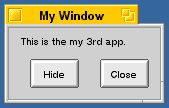
図[6.8] ButtonApp改訂版のウィンドウ
どうしてこんなに簡単に済んでしまうのか、リスト6.12を見てみましょう。ButtonViewクラスのコンストラクタでは、BViewのサブクラスのインスタンスを合計三つ生成し、それらをAddChild()メソッドで自分のサブビューとしてウィンドウに貼りつけています。そのうち、二つはBButtonクラスのインスタンス、残りの一つはBStringViewクラスのインスタンスです。これらのクラスは、それぞれ独自の描画機能を持っており、またBButtonクラスはマウス応答機能も備えています。ですから、ButtonViewクラスでは単にそれらのインスタンスを作って貼りつけるだけでよく、後の処理を任せてしまえるのです。
6.2.1の最後に、ButtonAppの最初のバージョンはアプリケーションの設計に間違いがあると書きました。どう間違っていたのか、そして解決するにはどうすれば良いかが分かったでしょうか?そう、それぞれの「ホットスポット」を、一つのビューオブジェクトにすれば良かったのです。つまり、たった一つのクラスだけで全ての処理を行うのではなく、それぞれ独立した部品クラスを作り、どのように部品をまとめるかという処理だけを上位のクラスで実装するというわけです。このようなやり方は、ソフトウェア工学では分割統治法(devide and conquer)と呼ばれます。分割統治法は、プログラムをモジュール化し、プログラミングやデバッグ作業を簡単にするのに有効なやり方です。
それでは、リスト6.11で使っている二つのビュークラス、すなわちBButtonクラスとBStringViewクラスについて説明し、ButtonAppアプリケーションに関する話題を終えることにします。
■BButtonクラス
図6.8のように、プッシュボタンを描画します。マウス応答動作を行い、クリックされると、あらかじめセットされたメッセージを送ります。メッセージの送り先は、デフォルトでは所属するウィンドウオブジェクトですが、SetTarget()メソッドを使って変更することが可能です。なお、送信するメッセージは、コンストラクタの第四引数に与えるか、またはSetMessage()メソッドを使ってセットします。リスト6.11では、SetMessage()を使っています。
■BStringViewクラス
あらかじめセットされた文字列を描画します。マウス応答動作は行わず、単に文字列を描画するだけのクラスです。描画する文字列は、コンストラクタの第三引数に与えるか、またはSetText()メソッドを使ってセットします。リスト6.11では、コンストラクタの第三引数を使ってセットしています。
これら二つのクラスのコンストラクタに渡す引数について、以下にその説明を示します。
(1)BButtonクラスのコンストラクタ引数
○第一引数(BRect)
ビューのフレーム矩型、つまり、ウィンドウまたはスーパービュー(注6-8)の中で表示する位置と大きさを指定します。BViewクラスのコンストラクタに渡す第一引数と同じです。
○第二引数(const char*)
ビューの名前を指定します。BViewクラスのコンストラクタに渡す第二引数と同じです。
○第三引数(const char*)
ボタンのラベルとして表示する文字列を指定します。
○第四引数(BMessage*)
クリックされた時に送信するメッセージオブジェクトを渡します。渡したメッセージオブジェクトは、BButtonクラスのデストラクタで解放されます。メッセージ送信を行うためのPostMessage()メソッドとは違い、メッセージオブジェクトのコピーは行われません。必ずnew演算子を用いてBMessageクラスのインスタンスを生成し、そのポインタを渡すようにして下さい。
○第五引数(uint32)
リサイズ指定のフラグです。BViewクラスのコンストラクタに渡す第三引数と同じです。なお、この引数はオプションなので、リスト6.11では何も指定していません。
○第六引数(uint32)
ビューの振る舞いを指定するフラグです。BViewクラスのコンストラクタに渡す第四引数と同じです。なお、この引数もオプションなので、リスト6.11では何も指定していません。
(2)BStringViewクラスのコンストラクタ引数
○第一引数(BRect)
ビューのフレーム矩型、つまり、ウィンドウまたはスーパービューの中で表示する位置と大きさを指定します。BViewクラスのコンストラクタに渡す第一引数と同じです。
○第二引数(const char*)
ビューの名前を指定します。BViewクラスのコンストラクタに渡す第二引数と同じです。
○第三引数(const char*)
ボタンのラベルとして表示する文字列を指定します。
○第四引数(uint32)
リサイズ指定のフラグです。BViewクラスのコンストラクタに渡す第三引数と同じです。なお、この引数はオプションなので、リスト6.11では何も指定していません。
○第五引数(uint32)
ビューの振る舞いを指定するフラグです。BViewクラスのコンストラクタに渡す第四引数と同じです。なお、この引数もオプションなので、リスト6.11では何も指定していません。
BButtonクラスについて、二つ補足しておきます。まず、リスト6.12とリスト6.8を見比べて下さい。B_MINIMIZEメッセージに書き込んでいるデータ項目に違いがあるのに気付くでしょう。リスト6.8では、メッセージプロトコルで決められた通りに"when"項目と"minimize"項目を書き込んでいるのに対し、リスト6.11では"minimize"項目だけを書き込んでいます。実は、BButtonクラスはメッセージを送るときに"when"項目を書き込んでくれるので、メッセージをセットする側では"when"項目を省略してしまってよいのです。
二番目の補足事項ですが、BButtonクラスのコンストラクタに渡すフレーム矩型は、高さ情報が無視されます。ウィンドウにBButtonオブジェクトを貼りつけたとき、設定されているフォントに従って自動的にリサイズされるのです。章末の練習問題でもとり上げていますが、システムフォントの設定を変更し、フォントに合わせてボタンの高さが調節されることを確認してみて下さい。
さて、冒頭に掲げた三つの題材のうち、ようやく二つ目をクリアしました。なるべく簡単なプログラミングでマウスクリックに応答するには、専用のビュークラスのインスタンスを生成し、それをウィンドウに貼りつければよいのです。BeOSのAPIには、プッシュボタンやチェックボックスなど、標準的な部品が用意されています。これらを利用することで、よりプログラミングが簡単になります。最後のサンプルに進む前に、BeOSのAPIが用意しているユーザ入力用の部品について見ておくことにしましょう。
- (注)6-8
- ビューの中に別のビューを配置して入れ子にすることにより、それらの間に親子(階層)関係をつくることができます。この時、あるビューを子供として自分の内側に持つビューを、子供になっているビューの「スーパービュー」と呼びます。また、スーパービューから見た場合、子供になっているビューを「サブビュー」と呼びます。そして、それぞれのビューが占める矩型領域をスーパービュー上の座標位置で表わしたのが「フレーム矩型」です。これに対し、ビュー自身の座標系、つまりビューの占める矩型領域の隅に原点を置いて表わしたものが「バウンズ矩型」です。バウンズ矩型は必ず矩型の隅に座標原点がありますが、フレーム矩型の場合はスーパービューに対する相対座標なので、一般にはそうなりません。なお、スーパービューとサブビュー、およびフレーム矩型とバウンズ矩型の概念は、ウィンドウシステムに一般的なものです。座標系についても、BeOSでは他のウィンドウシステムと同様、左上隅に原点が置かれます。
6.2.3 その他の標準ビュー部品
改良バージョンのButtonAppでは、マウスクリックに応答するためにBButtonクラスを利用しました。また、文字列を表示するためにBStringViewクラスを使いました。これらのクラスは、BeOSのAPIのうちInterface Kitで提供されているものです。アプリケーションを作ってウィンドウに何かを表示する時は、まずInterface Kitを調べ、提供されているクラスを利用できないか検討することが大切です。そうしないと、既にライブラリとして用意されている機能を自分でプログラミングすることになり、余計な時間を過ごしてしまうことがあるからです。ここでは、この本を書いている時点でInterface Kitが提供しているクラスのうち、BViewのサブクラスになっているクラス、つまりビュークラスを紹介します。それぞれのクラスの説明は簡単なものに留めていますので、詳細についてはAPIリファレンスを参照して下さい。
■BBoxクラス
ラベル付きの枠を表示します。いくつかのビュー部品を一つにまとめ、グループとして表示する時に便利でしょう。本書では、第8章のサンプルで利用しています。
■BControlクラス
ボタンのように、マウスクリックに応答してメッセージを送るビュークラスから継承される基底クラスです。BControlは抽象クラスなので、インスタンスを作ることはできません。
■BDraggerクラス
ビュー部品をドラッグ&ドロップして、レプリカントを作るためのクラスです。DeskBarのメニューから"Show Replicants"を選ぶと、BDraggerオブジェクトはドラッグ用のつまみを表示します。本書では、第10章のサンプルで利用しています。
■BListViewクラス
リスト表示を行うクラスです。コントロールクラスではありませんが、リストの項目をクリックして選択したり、またダブルクリックすると、あらかじめセットしておいたメッセージを送ってくれます。サブクラスとして、アウトラインリスト形式の表示を行うBOutlineListViewクラスがあります。本書では、第8章のサンプルで利用しています。
■BMenuクラス
メニュー表示を行うクラスです。サブクラスとして、メニューバー機能を提供するBMenuBarクラス、およびポップアップメニュー機能を持つBPopUpMenuクラスがあります。本書では、この章の最後に紹介するサンプル以降、すべてのサンプルでBMenuクラスとBMenuBarクラスを利用しています。また、第8章のサンプルでBPopUpMenuクラスを利用しています。
■BMenuFieldクラス
ポップアップメニューを表示させるボタンとして働くクラスです。本書では、第8章のサンプルで利用しています。
■BScrollBarクラス
スクロールバーの表示を行うクラスです。BScrollViewクラスと組み合わせて使います。本書では、第8章以降のサンプルで利用します。
■BScrollViewクラス
BScrollBarクラスと連携し、スクロール表示を行います。なお、BViewクラスにはBScrollBarを使ってスクロール表示を行う機能が備わっており、どのクラスにおいても、簡単にスクロール処理を行えます。
■BStatusBarクラス
プログレスバー表示を行うクラスです。Trackerでファイルをコピーする時に現われるダイアログなどで使われています。本書では、このクラスを扱ったサンプルはありません。
■BStringViewクラス
6.2.2で説明したように、編集不能な文字列の表示を行うクラスです。先ほど説明したButtonAppの改良版で利用しました。
■BTabViewクラス
見出しとして表示した複数のタブのうち、選択されたものに応じて表示内容を切り替える機能を持ったクラスです。BTabクラスと組み合わせて使います。本書では、このクラスを扱ったサンプルはありません。
■BTextViewクラス
スタイル付きのテキスト表示機能を持ったクラスです。テキストエディタとしての基本機能を備えていますので、このクラスを使うだけで簡単なエディタを作ることが可能です。本書では、第10章のサンプルで利用します。
以下は、BControlクラスのサブクラス、つまりコントロールクラスの紹介です。
■BButtonクラス
6.2.2で説明したように、プッシュボタン機能を持つクラスです。先ほど説明したButtonAppの改良版で利用しました。
■BCheckBoxクラス
チェックボックス機能を持つクラスです。本書では、このクラスを扱ったサンプルはありません。
■BColorControlクラス
色指定のための選択パネル用のクラスです。システムプリファレンスの“Screen”などで使われています。本書では、このクラスを扱ったサンプルはありません。
■BPictureButtonクラス
ラベル文字列の代わりに画像を表示するプッシュボタンのクラスです。本書では、このクラスを扱ったサンプルはありません。
■BRadioButtonクラス
ラジオボタン機能を持つクラスです。本書では、このクラスを扱ったサンプルはありません。
■BSliderクラス
連続量を設定する部品に便利な、スライダー機能を持つクラスです。つまみの形を四角と三角のどちらにするか、インスタンスの生成時に指定できるようになっています。本書では、このクラスを扱ったサンプルはありません。
■BTextControlクラス
短いテキストを入力する、エディットフィールド機能を持つクラスです。本書では、第8章以降のサンプルで利用しています。
Interface Kitでは、今後BeOSの改良が続けられていくに従って新しいクラスが追加されていくものと思われます。上に挙げたクラス以外に利用できるクラスが加わっていないか、APIリファレンスで確認するのがよいでしょう。
6.3 もっとアプリケーションらしく
いよいよ、この章も終わりに近づきました。最後のサンプルを使って説明することにしましょう。5.2節で述べたように、この章でアプリケーションプログラミングの基礎に関する解説は終わりです。次の第7章からは、章ごとに設けたテーマに従ってサンプルアプリケーションを作っていきます。「もう基礎が終わりなのか?」と思われるかも知れませんが、今までの内容を振り返ってみて下さい。ウィンドウを開き、BViewクラスの描画メソッドを使ってウィンドウに描画することは、前の章で学びました。また、ユーザのマウスクリックに応答してアプリケーションを動かすやり方も、この章で学んだはずです。あとは、ウィンドウにメニューを付けることができれば、立派なBeOSアプリケーションのでき上がりです。そのアプリケーションにどんな機能を追加し、自分のやりたい作業を手伝うツールに作り上げていくかというのは、応用編として学んでいくべきことなのです。では、基礎編の最後の仕上げにとりかかりましょう。
まず、これから説明するサンプルアプリケーションの機能、つまり外部仕様を以下に示します。
・起動するとウィンドウを開く。
・ウィンドウにはメニューバーがあり、"File"メニューから"Quit"項目を選んでアプリケーションを終了できる。また、アバウト項目を選ぶとアバウトダイアログを表示する。
・アバウトダイアログには、作者やコピーライト情報を表示する。
・ウィンドウには"Hide"ボタンと"Close"ボタンがあり、"Hide"ボタンをクリックするとウィンドウを最小化して隠す。また、"Close"ボタンをクリックすると、ウィンドウを閉じてアプリケーションを終了しようとする。
・ウィンドウを閉じようとした時、アプリケーションを終了してしまってもよいのか確認を求めるアラートを表示する。
・ウィンドウをリサイズすると、それに追随してボタンの位置を移動する。
このサンプルは、一般的なBeOSアプリケーションの基本機能だけを備えた小さなアプリケーションという意味で、“TinyApp”という名前を付けました。TinyAppを起動して開かれるウィンドウのスクリーンショットを、図6.9に示します。
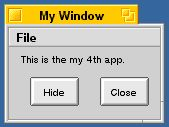
図[6.9] TinyAppのウィンドウ
また、ウィンドウをリサイズした時の様子を図6.10に示します。比較のために、ButtonAppの改良バージョンのウィンドウと並べています。TinyAppでは、二つのボタンが常にウィンドウの右下隅に置かれるのに対し、ButtonAppでは最初にウィンドウを開いたときの場所から動かないのが分かりますね。
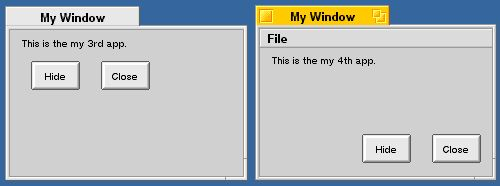
図[6.10] TinyAppとButtonAppのウィンドウ
できれば、付録のサンプルコード集にあるTinyAppのソースファイルやプロジェクトファイルを使ってアプリケーションを作り、実際に動かしてみて下さい。より説明が分かりやすくなるでしょう。TinyAppのフォルダは、サンプルコード集の“6.3_TinyApp”です。
アプリケーションの外部仕様と動きが分かったら、次はソースコードを読んで内容を理解すれば終わりです。リスト6.13～6.16に、TinyAppのソースを示します。読んでみて下さい。
[リスト6.13] TinyApp.hの内容
#ifndef _TINY_APP_H_
#define _TINY_APP_H_
#include <app/Application.h>
/* 関連クラス・構造体 */
class BMenuBar;
/*
* TinyAppクラスの定義
*/
class TinyApp : public BApplication {
// メソッド
public:
// 初期化と解放
TinyApp(void);
~TinyApp(void);
private:
// 起動と終了
void ReadyToRun(void);
// メニュー応答
BMenuBar* MakeMenuBar(void);
void AboutRequested(void);
};
#endif /* _TINY_APP_H_ */
[リスト6.14] TinyApp.cpの内容
#include "TinyApp.h"
#include "ButtonView.h"
#include "SmartWindow.h"
#include <interface/Alert.h>
#include <interface/MenuBar.h>
#include <interface/MenuItem.h>
/* アバウトダイアログのメッセージ */
const char kAboutMsg[] = "TinyApp\n\n"
"Copyright " B_UTF8_COPYRIGHT " 1997-1998 Fort Gunnison, Inc.\n"
"Author: Shin'ya Koga (koga@ftgun.co.jp)";
/* TinyAppクラスの非公開メソッド */
/*
* 起動と終了; TinyApp
*/
void
TinyApp::ReadyToRun (void)
{
SmartWindow* windowObj;
BMenuBar* menuBar;
float minWidth, minHeight;
float maxWidth, maxHeight;
/* ウィンドウオブジェクトを生成 */
windowObj = new SmartWindow(
BRect(50, 50, 200, 140),
"My Window",
B_TITLED_WINDOW,
0
);
/* メニューバーを生成 */
menuBar = this->MakeMenuBar();
/* ウィンドウの表示内容を設定して表示 */
windowObj->InitContent(
menuBar,
new ButtonView(
BRect(0, 0, 0, 0),
"content",
B_FOLLOW_ALL_SIDES,
B_WILL_DRAW
)
);
/* ウィンドウの最大サイズと最小サイズを調節 */
windowObj->GetSizeLimits(
&minWidth, &maxWidth, &minHeight, &maxHeight);
windowObj->SetSizeLimits(
140, maxWidth, 85, maxHeight);
return;
}
/*
* メニューの設定と応答; TinyApp
*/
BMenuBar*
TinyApp::MakeMenuBar (void)
{
BMenuBar* theMenuBar;
BMenu* theFileMenu;
/* メニューバーとメニューを生成 */
theMenuBar = new BMenuBar(BRect(0, 0, 0, 0), B_EMPTY_STRING);
theFileMenu = new BMenu("File");
theMenuBar->AddItem(theFileMenu);
/* About項目を追加 */
(void)theFileMenu->AddItem(
new BMenuItem(
"About TinyApp" B_UTF8_ELLIPSIS,
new BMessage(B_ABOUT_REQUESTED)
)
);
/* セパレータを追加 */
(void)theFileMenu->AddSeparatorItem();
/* Quit項目を追加 */
(void)theFileMenu->AddItem(
new BMenuItem(
"Quit",
new BMessage(B_QUIT_REQUESTED),
'Q'
)
);
/* メニューのターゲットを設定 */
theFileMenu->SetTargetForItems(this);
return theMenuBar;
}
void
TinyApp::AboutRequested (void)
{
BAlert* alertPanel;
alertPanel = new BAlert(
"about box", kAboutMsg, "OK"
);
(void)alertPanel->Go(NULL);
return;
}
/*
* TinyAppクラスの公開メソッド
*/
TinyApp::TinyApp (void)
: BApplication("application/x-vnd.FtGUN-TinyApp")
{ /* do nothing */ }
TinyApp::~TinyApp (void)
{ /* do nothing */ }
[リスト6.15] SmartWindow.hの内容
#ifndef _SMART_WINDOW_H_
#define _SMART_WINDOW_H_
#include "SingleWindow.h"
/*
* SmartWindowクラスの定義
*/
class SmartWindow : public SingleWindow {
// メソッド
public:
// 初期化と解放
SmartWindow(BRect frame, const char* title,
window_type type, uint32 flags,
uint32 workspace = B_CURRENT_WORKSPACE);
~SmartWindow(void);
void InitContent(BMenuBar* inMenuBar, BView* inContent);
private:
// 終了時処理
bool QuitRequested(void);
};
#endif /* _SMART_WINDOW_H_ */
[リスト6.16] SmartWindow.cpの内容
#include "SmartWindow.h"
#include <interface/Alert.h>
#include <interface/MenuBar.h>
#include <support/Debug.h>
/* アラート用のメッセージ */
const char kConfirmQuitMsg[] = "If close this window, "
"the application will quit.\n"
"Are you OK?";
/*
* SmartWindowクラスの非公開メソッド
*/
bool
SmartWindow::QuitRequested (void)
{
bool isOK;
BAlert* alertPanel;
BMessage* theMessage = this->CurrentMessage();
/* アプリケーション全体を終了する場合は何もしない */
if (theMessage == NULL || theMessage->what != B_QUIT_REQUESTED)
return true;
/* 終了してもよいかユーザに確認 */
alertPanel = new BAlert(
B_EMPTY_STRING, kConfirmQuitMsg,
"Cancel", "OK", NULL,
B_WIDTH_FROM_WIDEST, B_WARNING_ALERT
);
alertPanel->SetShortcut(0, B_ESCAPE);
isOK = (alertPanel->Go() == 1);
return isOK;
}
/*
* SmartWindowクラスの公開メソッド
*/
SmartWindow::SmartWindow (BRect frame, const char* title,
window_type type, uint32 flags, uint32 workspace)
: SingleWindow(frame, title, type, flags, workspace)
{ /* do nothing */ }
SmartWindow::~SmartWindow (void)
{ /* do nothing */ }
void
SmartWindow::InitContent (BMenuBar* inMenuBar, BView* inContent)
{
#if DEBUG
this->Lock();
ASSERT(this->IsHidden());
ASSERT(this->CountChildren() == 0);
this->Unlock();
#endif
BRect myBounds = this->Bounds();
BRect mbarFrame;
/* メニューバーを貼り付ける */
this->AddChild(inMenuBar);
mbarFrame = inMenuBar->Frame();
/* ビューのサイズを調節 */
inContent->ResizeTo(
myBounds.Width(), myBounds.Height() - mbarFrame.Height() - 1
);
inContent->MoveBy(0, mbarFrame.Height() + 1);
/* ビューを貼り付ける */
this->AddChild(inContent);
/* スクリーンに表示 */
this->Show();
return;
}
上のリストを見て、ビュークラスのソースがないのに気付いたでしょうか。実は、TinyAppはButtonAppの改良バージョンと殆ど同じビュークラス(ButtonView)を利用しているので、ここには載せていないのです。改良バージョンのButtonAppで使っているButtonViewクラスのソースは、リスト6.11と6.12に載っています。気になる人は読み返してみて下さい。なお、本章のこれまでのサンプルと同様、TinyAppのmain()ルーチンを載せるのは省略しました。
では、リストの順番にソースコードの内容を説明します。まず、リスト6.13と6.14は、アプリケーションクラス(TinyApp)のソースです。リスト6.13のクラス定義を見ると、これまでのサンプルの場合と違い、メニュー応答用のメソッドが二つ追加されているのが分かるでしょう。また、リスト6.14の実装部を見ると、ReadyToRun()メソッドの内容も若干違います。TinyAppクラスのメソッドについて、以下にそれぞれの概略を示します。
■コンストラクタ
■デストラクタ
このクラスでは、コンストラクタもデストラクタも本体は空です。何もしません。
■ReadyToRun()メソッド
ウィンドウオブジェクトを生成します。また、メニューバーとビューオブジェクトを生成し、ウィンドウの表示内容として設定した後、スクリーンにウィンドウを出します。その後、ウィンドウオブジェクトに対してSetSizeLimits()メソッドを呼び出し、リサイズ可能な最小サイズを設定します。
■MakeMenuBar()メソッド
メニューバーを生成します。また、ファイルメニューとメニュー項目を生成し、メニューバーの内容として設定します。メニュー項目を選択した時のターゲット、つまりメッセージの送信先には、自分自身をセットします。
■AboutRequested()メソッド
このメソッドは、アプリケーションオブジェクトがアバウトダイアログの表示要求メッセージ(B_ABOUT_REQUESTED)を受け取った時に呼び出されるフック関数です。TinyAppクラスでは、BAlertクラスのインスタンスを生成してアバウトダイアログ表示に使っています。
これらのメソッドで利用しているBeOSのAPIのうち、これまでのサンプルでは使っていなかったものを説明します。まず、ReadyToRun()メソッドではBWindowクラスのメソッドを二つ利用しています。リサイズ可能な最大サイズと最小サイズを取得するGetSizeLimits()と、それらを設定するSetSizeLimits()です。サイズは、幅と高さで指定します。なお、BeOSのAPIでは座標値の型にfloatを使いますので、幅と高さをセットする変数もfloat型にしています。
次に、MakeMenuBar()メソッドでは、メニュー関連の三つのクラスを使っています。メニューバー機能を提供するBMenuBar、メニューバーの項目として表示され、メニュー機能を提供するBMenu、そしてメニュー項目機能を提供するBMenuItemです。これら三つのクラスのインスタンスは、互いに連携し、図6.11に示すような階層構造で結ばれます。
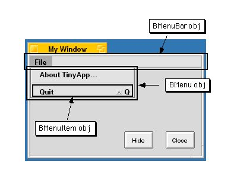
図[6.11] メニュー項目が表示された画面を使った解説図
メニューバーにメニューを追加するには、BMenuBarオブジェクトに対してAddItem()メソッドを呼び出し、追加するBMenuオブジェクトを引数に渡します。また、メニューにメニュー項目を追加するには、BMenuオブジェクトに対してAddItem()メソッドを呼び出し、追加するBMenuItemオブジェクトを引数に渡します。なお、BMenuクラスのAddItem()メソッドは多重定義されており、BMenuオブジェクトを追加項目として渡すことも可能です。その場合、追加した項目はサブメニューになり、階層メニューが作られます。本書では、第9章のサンプルで階層メニューを扱います。
MakeMenuBar()メソッドでは、AddItem()の他にBMenuクラスのメソッドを二つ使っています。メニュー項目をグループ分けするのに便利なセパレータ項目を追加するAddSeparatorItem()と、それからメニュー項目のターゲットをセットするSetTargetForItems()です。TinyAppアプリケーションでは"File"メニューに二つの項目がありますが、そのどちらもアプリケーションオブジェクトで処理するのが自然なので、ターゲット、つまりメッセージの送り先を自分自身にセットしています。このメソッドを呼び出さなかった場合、メッセージの送り先はメニューバーが所属するウィンドウオブジェクトになります。
(1)～(3)に、これらメニュー関連クラスのコンストラクタが受け取る引数の説明を示します。
(1)BMenuBarクラスのコンストラクタ引数
○第一引数(BRect)
メニューバーのフレーム矩型を指定します。BViewクラスのコンストラクタに渡す第一引数と同じです。
○第二引数(const char*)
メニューバーの名前を指定します。BViewクラスのコンストラクタに渡す第二引数と同じです。リスト6.14では、空文字列(B_EMPTY_STRING)を渡しています。
○第三引数(uint32)
リサイズ指定のフラグです。BViewクラスのコンストラクタに渡す第三引数と同じです。この引数はオプションなので、リスト6.14では何もしていません。BMenuBarクラスでは、デフォルトだとスーパービューがリサイズされると同じ幅で追従するようになっています。
○第四引数(menu_layout)
それぞれのメニューをどう配置するかを指定します。この引数もオプションです。デフォルトでは、メニューバーの中に横並びでメニューが表示されるようになっています。詳細はAPIリファレンスを参照して下さい。
○第五引数(bool)
メニューを適切に表示するよう、メニューの表示フォントに合わせて自動的にリサイズを行うかどうかを指定します。この引数もオプションで、デフォルトだと自動リサイズを行います。
(2)BMenuクラスのコンストラクタ引数
○第一引数(const char*)
メニューのラベルを指定します。リスト6.14では、"File"を渡しています。
○第二引数(menu_layout)
メニュー項目をどのように配置するかを指定します。この引数はオプションなので、リスト6.14では何も指定していません。デフォルトでは、メニュー項目を縦に並べて表示するようになっています。詳細はAPIリファレンスを参照して下さい。
(3)BMenuItemクラスのコンストラクタ引数
○第一引数(const char*)
メニュー項目のラベルを指定します。リスト6.14では、"About TinyApp..."(注6-9)や"Quit"を指定しています。
○第二引数(BMessage*)
メニュー項目が選択された時に送るメッセージオブジェクトを渡します。渡したメッセージオブジェクトは、BButtonクラスの場合と同様、BMenuItemクラスのデストラクタで解放されます。必ずnew演算子を用いてBMessageクラスのインスタンスを生成し、そのポインタを渡すようにして下さい。
○第三引数(char)
ショートカットキーを指定します。この引数はオプションで、何も指定しなければショートカットキーは設定されません。リスト6.14では、Quit項目のショートカットキーとして'Q'を指定しています。
○第四引数(uint32)
モディファイアキーを指定します。この引数もオプションで、何も指定しなければモディファイアキーは設定されません。リスト6.14では、指定を行っていません。詳細はAPIリファレンスを参照して下さい。
TinyAppクラスの最後のメソッドはAboutRequested()です。リスト6.13では、BAlertクラスのインスタンスを生成し、Go()メソッドを呼び出してスクリーンに表示しています。BAlertクラスのGo()メソッドは多重定義されており、引数付きのバージョンと引数なしのバージョンがあります。ここでは引数付きのバージョンを使い、アラートパネルが表示されたらすぐにGo()メソッドの呼び出しが終わり、アプリケーションとアラートパネルが独立して動けるようにしています。もう一つのバージョンを使うと、アラートパネルが閉じるまでGo()メソッドから呼び出し側に制御が戻らないので、ユーザに確認を求めるためのモーダルダイアログとして使う場合に便利です。リスト6.15では、モーダルダイアログとしてBAlertオブジェクトを利用しています。
(4)に、BAlertクラスのコンストラクタが受け取る引数の説明を示します。
(4)BAlertクラスのコンストラクタ引数
○第一引数(const char*)
アラートパネルのタイトルを指定します。アラートパネルにはタイトルタブがないので実際には表示されませんが、BAlertクラスが継承しているBWindowクラスのコンストラクタに渡されます。これは、BWindowクラスのコンストラクタに渡す第二引数と同じものです。
○第二引数(const char*)
アラートパネルに表示するメッセージ文字列を指定します。リスト6.14では、文字列定数kAboutMsgを渡しています。
○第三引数(const char*)
アラートパネルに表示可能な三つのボタンのうち、一番目のボタンのラベルを指定します。複数のボタンを表示するよう指定した場合、一番目のボタンは最も左側に現われます。
○第四引数(const char*)
アラートパネルに表示可能な三つのボタンのうち、二番目のボタンのラベルを指定します。この引数はオプションであり、リスト6.14では何も指定していません。デフォルトではNULLが渡され、ボタンが表示されません。
○第五引数(const char*)
アラートパネルに表示可能な三つのボタンのうち、三番目のボタンのラベルを指定します。この引数もオプションであり、リスト6.14では何も指定していません。デフォルトではNULLが渡され、ボタンが表示されません。三つのボタンすべてを表示するよう指定した場合、三番目のボタンは最も右側に現われます。
○第六引数(button_width)
それぞれのボタンの幅をどのように調節するかを指定します。この引数もオプションなので、リスト6.14では何も指定していません。詳細はAPIリファレンスを参照して下さい。
○第七引数(alert_type)
アラートパネルの種類を指定します。アラートパネルには全部で五つの種類があり、種類に応じてパネルに表示されるアイコンが変わります。この引数もオプションです。デフォルトでは、ユーザにそれほど緊急度の高くない通知を行う種類(B_INFO_ALERT)が指定されます。
以上でTinyAppクラスの説明を終わります。次に、ウィンドウクラス(SmartWindow)の説明をして終わりにしたいと思います。
リスト6.15と6.16が、SmartWindowクラスのソースです。リスト6.15のクラス定義を見ると分かるように、このクラスは本章の全てのサンプルで共通に使ってきたSingleWindowクラスを継承し、二つのメソッドを追加しています。一つは、ウィンドウの表示内容としてメニューバーとビューオブジェクトを受け取るバージョンのInitContent()メソッドで、メニューバー付きのウィンドウを作るために追加しました。もう一つは、ウィンドウ終了要求メッセージ(B_QUIT_REQUESTED)を受け取った時に呼び出される、フック関数のQuitRequested()です。
これら二つのメソッドについて、以下に概略を示します。
■InitContent()メソッド
AddChild()メソッドを使ってメニューバーを自分に貼りつけ、その後でビューオブジェクトをリサイズして貼りつけています。メニューバーの高さを取得するのに、まず自分に貼りつけてからFrame()メソッドを呼び出してフレーム矩型を取得していることに注目して下さい。メニューバーは、ウィンドウに貼りつけられた時点で自動リサイズ処理を行うので、こうしないと正しい高さが分からないのです。
■QuitRequested()メソッド
アラートパネルを表示して、アプリケーションを終了してしまってもよいのかユーザに確認を求めます。BAlertクラスのコンストラクタには、二つのボタンを表示するよう指定しています。また、アラートパネルの種類として、警告を意味する“B_WARNING_ALERT”を指定しています。ここでは、アラートパネルを表示するのにGo()メソッドの引数なしバージョンを使っているので、ユーザが応答してアラートパネルが閉じられるまで、Go()メソッドの呼び出しは終わりません。
QuitRequested()メソッドについて、いくつか補足しておきます。まず、このメソッドの先頭ではCurrentMessage()メソッドの戻り値を使った判定処理を行っていますが、これについて説明します。アプリケーションを実際に動かしてみると分かると思いますが、終了確認を求めるアラートは、"File"メニューから"Quit"項目を選んだ時は表示されません。つまり、ウィンドウを閉じてアプリケーションを終了しようとした時と、メニューを使ってアプリケーション自体を終了しようとした時の振る舞いが違うのです。QuitRequested()で行っている判定処理は、アプリケーション自体の終了を指定されたのかどうかを調べるものです。つまり、ウィンドウオブジェクトに終了要求メッセージを送られたのであれば、そのメッセージがCurrentMessage()の戻り値として返されるはずです。そうでない場合は、アプリケーションオブジェクトが終了要求メッセージを受け取り、アプリケーションクラスによってQuitRequested()が呼び出されたということになるのです。
次に、これはそれほど重要なものではありませんが、アラートパネルを生成した後、SetShortcut()メソッドを使って“Cancel”ボタンのショートカットキーを設定しています。SetShortcut()メソッドの第一引数はボタンを指定するインデックスで、リスト6.16では0、つまり一番目のボタンを指定しています。また、第二引数には設定するショートカットキーを渡します。
最後は、BAlertPanelクラスのGo()メソッドの呼び出しに関連した話しです。リスト6.16では、引数をとらないバージョンのGo()メソッドを呼び出しており、アラートパネルが閉じられるまでは呼び出し側、つまりSmartWindowオブジェクトのウィンドウスレッドに制御が戻らないことは既に述べました。でも、それは本当なのでしょうか?たしかに、“Cancel”ボタンを押すか“OK”ボタンを押すかでアプリケーションの反応が違いますから、アラートパネルとの間の同期はとれているようです。しかし、もう少しだけアプリケーションの動きを調べてみて下さい。表示されたアラートパネルの枠をマウスでドラッグして動かすと、どうなるでしょうか?
「何も問題ないよ。」と思った人は・・・間違っているかも知れません。だって、アラートパネルを開いている間はウィンドウスレッドの動作がとまっているのに、どうしてウィンドウの内容が正しく再描画されるのでしょう?実は、BAlertPanelクラスは、引数をとらないバージョンのGo()メソッドの中から、定期的に呼び出し元のウィンドウオブジェクトに対して再描画用のメソッドを呼び出しているのです。BWindowクラスのUpdateIfNeeded()メソッドは、DispatchMessage()メソッドによるメッセージの処理の途中であっても、必要であればウィンドウに貼りついているビューオブジェクトに対してDraw()メソッドの呼び出して再描画処理を行うことができます。そして、BAlertPanelクラスのGo()メソッドの中から、このメソッドが定期的に呼び出されます。ウィンドウのメッセージループを実行するウィンドウスレッドがGo()メソッドを呼び出してとまっているのに再描画が行われるのは、この働きによるものなのです。
なお、UpdateIfNeeded()メソッドはウィンドウスレッドから呼び出されないと動作しないという制限があります。しかし、BAlertPanel()クラスのGo()メソッドを呼び出したのはウィンドウスレッドですから、Go()メソッドの中からUpdateIfNeeded()の呼び出しを行うのも同じスレッド、すなわちウィンドウスレッド自身です。したがって、この制限は問題とならないのです。
- (注)6-9
- リスト6.14では、メニューのラベルに使う"..."という表示に三つのピリオドやドット記号の並びを使うのではなく、Interface Kitで定義されている“B_UTF8_ELLIPSIS”という特殊な文字定数を利用しています。上の囲みコラムで述べているように、Be社ではこのやり方を推奨しており、他にもいくつかの特殊文字定数を定義しています。
6.4 まとめと練習問題
この章では、最初に挙げた題材をプログラミングするために、次のような解決手段を用いました:■マウスクリックに応答する
→BViewクラスのサブクラスを作成し、MouseDown()メソッドを再定義する。
■なるべく簡単なプログラミングでマウスクリックに応答する
→BButtonクラスのインスタンスを生成し、AddChild()メソッドを使ってビューオブジェクトやウィンドウに貼りつける。
■ウィンドウにメニューを付け、一人前のアプリケーションらしくする
→BMenuBarクラスのインスタンスを生成し、AddChild()メソッドを使ってウィンドウに貼りつける。次に、BMenuおよびBMenuItemクラスのインスタンスを生成し、AddItem()メソッドを使ってメニューバーとメニューの内容をセットする。
この章で説明したことや、説明に使ったサンプルアプリケーションに対する理解を深めるために、以下の練習問題について考えてみて下さい。
練習問題 1
リスト6.2(ClickApp.cp)のClickApp::ReadyToRun()メソッドで、SingleWindowオブジェクトに対するInitContent()メソッドの呼び出しを二回行うように書き換えるとどうなるでしょうか。この変更を行って“ClickApp”アプリケーションを作り直し、実際に動かしてみて下さい。なお、そのままでは、SingleWindow::InitContent()メソッドの中で行っているASSERT()マクロによるチェックは無効になっています。ASSERT()マクロが有効になるよう設定したうえで、もう一度アプリケーションを作り直して動かして下さい(注6-10)。今度は何が起きるでしょうか(注6-11)。
練習問題 2
リスト6.6(ClickView.cp)のClickView::HotSpotAction()メソッドで、一番最後に行っている描画色の復元処理を省略すると、何が起こるでしょうか。このメソッドで最後に行っているSetHighColor()メソッドの呼び出し行をコメントアウトし、“ClickApp”アプリケーションを作り直してみて下さい。できたものを動かすと何が起こるでしょうか。変更前のものとの違いが分からない場合は、ホットスポット、つまり赤い四角の領域でマウスボタンを押し、四角の外までドラッグしてからボタンを離して下さい。それからウィンドウのタイトルタブをダブルクリックして最小化します。最小化によって隠れたウィンドウをもう一度表示させてみて下さい。何が起きるか分かったら、その原因を突き止めてみましょう。
練習問題 3
練習問題2で行った“ClickApp”アプリケーションの変更箇所は元に戻さずに、他の部分を修正することによって最初と同じアプリケーションの動きを取り戻せるでしょうか。どうすればよいか、その修正方法を考えて下さい。修正方法を思いついたら、思い通りの結果になるかどうかを確認しましょう。練習問題 4
システムフォントのうち、“Plain font”のサイズを“Fonts”プリファレンスで大きくし、それから改良バージョンの“ButtonApp”アプリケーションを起動してみて下さい。フォントサイズに合わせてボタンの高さが変わることを確認でできるでしょうか。分からない場合は、フォントサイズを元に戻してから再びアプリケーションを起動し、比べて下さい。練習問題 5
リスト6.5と6.6のClickViewクラスを参考にして、ボタン機能を持つビュークラスを作って下さい。四角形や円形のボタンを作り、それを使って最初のバージョンの“ButtonApp”アプリケーションを作り直してみて下さい。練習問題 6
“ButtonApp”アプリケーションのボタンをクリックした時に送信されるメッセージを、B_MINIMIZEとB_QUIT_REQUESTED以外のものにしてみて下さい。たとえば、B_ZOOMメッセージを送るようにすると、ウィンドウにズーム動作を行わせることが可能です。B_ZOOMメッセージのプロトコルをAPIリファレンスで調べ、ボタンウィンドウをクリックするとウィンドウがズームするようにして下さい。練習問題 7
“TinyApp”アプリケーションを改造し、ウィンドウの最小化とズーム動作を、ボタンのクリックではなくメニューの選択で行えるようにして下さい。練習問題 8
実は、“TinyApp”アプリケーションが使っているButtonViewクラスは改良バージョンの“ButtonApp”アプリケーションのものと一部が違っています。どこが違うのかを見つけて下さい。付録に付けたサンプルコードを実際に見比べる前に、両者の振る舞いの違いを探し、TinyAppアプリケーションではどこを変更したのか予想してみて下さい。- (注)6-10
- ASSERT()マクロの有効無効を切り替えるには、“DEBUG”の値を1に定義したデバッグ用のプリコンパイルヘッダをあらかじめ作っておくと便利です。これとシステム付属の標準プリコンパイルヘッダのどちらを使うかを、プロジェクトのパラメータ設定で切り替えるようにすると、直接ソースコードを書き換えなくても済むので、切り替えの作業がより安全で確実になります。
- (注)6-11
- 本書執筆時点のBeOS(Release 3)のIntel版では、低レベルデバッガによるデバッグモードをオンに設定しておかないと、ASSERT()マクロによる低レベルデバッガ(/bin/db)の呼び出しが正常に行われないようです。この実験をやる時は、2.3節でdebug_serverを説明した時に述べた設定手順を使って、あらかじめデバッグモードをオンにしておいて下さい。
Art of BeOS Programming
koga@stprec.co.jp